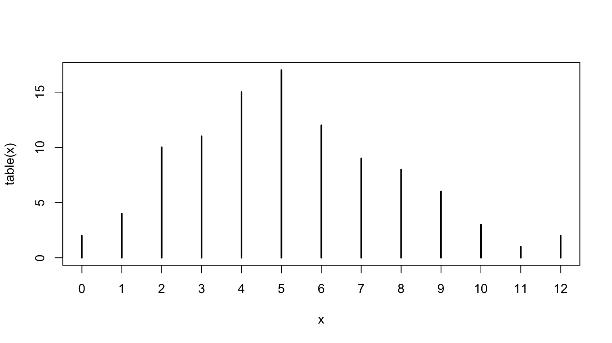

Workbook for completing quizzes and exercises from the
“Object-oriented programming” chapters of Advanced R, second
edition, with comparisons to solutions from Advanced R
Solutions.
13 S3
S3 is R’s first and simplest OO system. S3 is informal and ad hoc,
but there is a certain elegance in its minimalism: you can’t take away
any part of it and still have a useful OO system. For these reasons, you
should use it, unless you have a compelling reason to do otherwise. S3
is the only OO system used in the base and stats packages, and it’s the
most commonly used system in CRAN packages.
S3 is very flexible, which means it allows you to do things that are
quite ill-advised. If you’re coming from a strict environment like Java
this will seem pretty frightening, but it gives R programmers a
tremendous amount of freedom. It may be very difficult to prevent people
from doing something you don’t want them to do, but your users will
never be held back because there is something you haven’t implemented
yet. Since S3 has few built-in constraints, the key to its successful
use is applying the constraints yourself. This chapter will therefore
teach you the conventions you should (almost) always follow.
The goal of this chapter is to show you how the S3 system works, not
how to use it effectively to create new classes and generics. I’d
recommend coupling the theoretical knowledge from this chapter with the
practical knowledge encoded in the vctrs package.
13.2.1 Exercises
- Describe the difference between
t.test() and
t.data.frame(). When is each function called?
ftype(t.test)
#> [1] "S3" "generic"
ftype(t.data.frame)
#> [1] "S3" "method"
s3_dispatch(t.test(formula()))
#> => t.test.formula
#> * t.test.default
s3_dispatch(t(data.frame()))
#> => t.data.frame
#> -> t.default
Answer: As noted by sloop::ftype() and the docs,
t.test() is a S3 generic, and t.data.frame()
is an S3 method for t() (transpose).
t.data.frame() is called as a method when calling
t(x) when x is a data.frame.
t.test() calls either t.test.default or
t.test.formula.
AR Solutions: Because of S3’s generic.class() naming
scheme, both functions may initially look similar, while they are in
fact unrelated.
t.test() is a generic function that performs a
t-test.t.data.frame() is a method that gets called by
the generic t() to transpose data frame input.
Due to R’s S3 dispatch rules, t.test() would also get
called when t() is applied to an object of class
test
- Make a list of commonly used base R functions that contain
. in their name but are not S3 methods.
ftype(as.character)
#> [1] "primitive" "generic"
ftype(as.data.frame)
#> [1] "S3" "generic"
ftype(data.frame)
#> [1] "function"
ftype(eval.parent)
#> [1] "function"
ftype(file.path)
#> [1] "internal"
ftype(file.copy)
#> [1] "internal"
ftype(is.null)
#> [1] "primitive"
ftype(is.data.frame)
#> [1] "function"
ftype(Sys.localeconv)
#> [1] "internal"
ftype(Sys.time)
#> [1] "internal"
Answer:
- All of the
as. functions
data.frame- All of the
file. functions
- All of the
is. functions
- All of the
Sys. functions
AR Solutions: In recent years “snake_case”-style has become
increasingly common when naming functions and variables in R. But many
functions in base R will continue to be “point.separated”, which is why
some inconsistency in your R code most likely cannot be avoided.
(install.packages(), read.csv(), list.files(), download.file(), data.frame(), as.character(), Sys.Date(), all.equal(), do.call(), on.exit())
- What does the
as.data.frame.data.frame() method do? Why
is it confusing? How could you avoid this confusion in your own
code?
s3_dispatch(as.data.frame(data.frame()))
#> => as.data.frame.data.frame
#> * as.data.frame.default
Answer: as.data.frame.data.frame() is the method used to
coerce a data.frame to a data.frame. This is
confusing because the class contains a period (as does the function
call); avoiding periods improves readability:
as_dataframe.dataframe makes the generic and method
clear.
AR Solutions: The function as.data.frame.data.frame()
implements the data.frame() method for the
as.data.frame() generic, which coerces objects to
data frames.
The name is confusing, because it does not clearly communicate the
type of the function, which could be a regular function, a generic or a
method. Even if we assume a method, the amount of .’s makes
it difficult to separate the generic- and the class-part of the name. Is
it the data.frame.data.frame() method for the
as() generic? Is it the frame.data.frame()
method for the as.data() generic?
We could avoid this confusion by applying a different naming
convention (e.g. “snake_case”) for our class and function names.
- Describe the difference in behaviour in these two calls.
set.seed(1014)
some_days <- as.Date("2017-01-31") + sample(10, 5)
mean(some_days)
#> [1] "2017-02-06"
mean(unclass(some_days))
#> [1] 17203.4
s3_dispatch(mean(some_days))
#> => mean.Date
#> * mean.default
s3_dispatch(mean(unclass(some_days)))
#> mean.double
#> mean.numeric
#> => mean.default
Answer: the first call calculates the mean using
mean.Date(), and so returns a date. using
unclass() changes the date to its underlying value (double)
which calculates the mean using mean.default().
AR Solutions: mean() is a generic function, which will
select the appropriate method based on the class of the input.
some_days has the class Date and
mean.Date(some_days) will be used to calculate the mean
date of some_days.
After unclass() has removed the class attribute from
some_date, the default method is chosen.
mean.default(unclass(some_days)) then calculates the mean
of the underlying double.
- What class of object does the following code return? What base type
is it built on? What attributes does it use?
x <- ecdf(rpois(100, 10))
x
#> Empirical CDF
#> Call: ecdf(rpois(100, 10))
#> x[1:18] = 2, 3, 4, ..., 18, 19
str(x)
#> function (v)
#> - attr(*, "class")= chr [1:3] "ecdf" "stepfun" "function"
#> - attr(*, "call")= language ecdf(rpois(100, 10))
Answer: the code returns an object of class ecdf, which
is build on the stepfun object, and the
function base type. It additionally includes the
call attribute.
AR Solutions: It returns an object of the class ecdf
(empirical cumulative distribution function) with the superclasses
stepfun and function. The ecdf
object is built on the base type closure (a function). The
expression, which was used to create it (rpois(100, 10)),
is stored in the call attribute.
typeof(x)
#> [1] "closure"
- What class of object does the following code return? What base type
is it built on? What attributes does it use?
x <- table(rpois(100, 5))
x
#>
#> 1 2 3 4 5 6 7 8 9 10
#> 7 5 18 14 15 15 14 4 5 3
str(x)
#> 'table' int [1:10(1d)] 7 5 18 14 15 15 14 4 5 3
#> - attr(*, "dimnames")=List of 1
#> ..$ : chr [1:10] "1" "2" "3" "4" ...
str(unclass(x))
#> int [1:10(1d)] 7 5 18 14 15 15 14 4 5 3
#> - attr(*, "dimnames")=List of 1
#> ..$ : chr [1:10] "1" "2" "3" "4" ...
Answer: per the docs, the code returns an object of class
table, which is built on array, which uses the
dimnames attribute in combination with a vector.
AR Solutions: This code returns a table object, which is
built upon the integer type. The attribute
dimnames is used to name the elements of the integer
vector.
13.3.4 Exercises
- Write a constructor for
data.frame objects. What base
type is a data frame built on? What attributes does it use? What are the
restrictions placed on the individual elements? What about the
names?
dput(data.frame())
#> structure(list(), names = character(0), row.names = integer(0), class = "data.frame")
dput(data.frame(a = 1:2, b = 3:4))
#> structure(list(a = 1:2, b = 3:4), class = "data.frame", row.names = c(NA,
#> -2L))
unclass(data.frame(a = 1:2, b = 3:4))
#> $a
#> [1] 1 2
#>
#> $b
#> [1] 3 4
#>
#> attr(,"row.names")
#> [1] 1 2
Answer: code below. The data frame is built on the list base type,
and includes the names, row.names, and class attributes. This
implementation requires values to be a list, names to be a character,
and row.names to be an integer.
new_data.frame <- function(values = list(), # nolint: object_name_linter.
names = character(length(values)),
row.names = integer(length(values))) { # nolint: object_name_linter.
stopifnot(
is.list(values),
is.character(names),
is.integer(row.names)
)
structure(values, names = names, row.names = row.names, class = "data.frame")
}
new_data.frame()
new_data.frame(list(1:3, 4:6, 7:9))
new_data.frame(list(1:3, 4:6, 7:9), names = c("a", "b", "c"), row.names = 1:3)
AR Solutions: Data frames are built on named lists of vectors, which
all have the same length. Besides the class and the column
names (names), the row.names are their only
further attribute. This must be a character vector with the same length
as the other vectors.
We need to provide the number of rows as an input to make it possible
to create data frames with 0 columns but multiple rows.
This leads to the following constructor:
new_data.frame <- function(x, n, row.names = NULL) { # nolint: object_name_linter.
# nolint start: consecutive_stopifnot_linter.
# Check if the underlying object is a list
stopifnot(is.list(x))
# Check all inputs are the same length
# (This check also allows that x has length 0)
stopifnot(all(lengths(x) == n))
# nolint end
if (is.null(row.names)) {
# Use special row names helper from base R
row.names <- .set_row_names(n) # nolint: object_name_linter.
} else {
# Otherwise check that they're a character vector with the
# correct length
stopifnot(is.character(row.names), length(row.names) == n)
}
structure(
x,
class = "data.frame",
row.names = row.names
)
}
# Test
x <- list(a = 1, b = 2)
new_data.frame(x, n = 1)
new_data.frame(x, n = 1, row.names = "l1")
# Create a data frame with 0 columns and 2 rows
new_data.frame(list(), n = 2)
Note: AR Solutions approach also validates that all inputs are same
length, and supports creation of dataframes with 0 columns but multiple
rows.
- Enhance my
factor() helper to have better behaviour
when one or more values is not found in
levels. What does base::factor() do in this
situation?
new_factor <- function(x = integer(), levels = character()) {
stopifnot(
is.integer(x),
is.character(levels)
)
structure(
x,
levels = levels,
class = "factor"
)
}
Answer: the fix is to update validate_factor() to allow
NA values, since the helper already fills in
NA when values is not found in
levels. This matches the behavior of
base::factor().
validate_factor <- function(x) {
values <- unclass(x)
levels <- attr(x, "levels")
if (!all(is.na(values) | values > 0)) {
stop(
"All non-missing `x` values must be greater than zero",
call. = FALSE
)
}
if (length(levels) < max(values, na.rm = TRUE)) {
stop(
"There must be at least as many `levels` as possible values in `x`",
call. = FALSE
)
}
x
}
my_factor <- function(x = character(), levels = unique(x)) {
ind <- match(x, levels)
validate_factor(new_factor(ind, levels))
}
factor(c("a", "a", "b"), levels = "a")
#> [1] a a <NA>
#> Levels: a
my_factor(c("a", "a", "b"), levels = "a")
#> [1] a a <NA>
#> Levels: a
AR Solutions: base::factor() converts these values
(silently) into NAs.
The factor() helper including the constructor
(new_factor()) and its validator
(validate_factor()) were given in Advanced R.
However, as the goal of this question is to throw an early error within
the helper, we only repeat the code for the helper:
To improve the factor() helper we choose to return an
informative error message instead.
factor2 <- function(x, levels = unique(x)) {
new_levels <- match(x, levels)
# Error if levels don't include all values
missing <- unique(setdiff(x, levels))
if (length(missing) > 0) {
stop(
"The following values do not occur in the levels of x: ",
paste0("'", missing, "'", collapse = ", "), ".",
call. = FALSE
)
}
validate_factor(new_factor(new_levels, levels))
}
# Test
try(factor2(c("a", "b", "c"), levels = c("a", "b")))
#> Error : The following values do not occur in the levels of x: 'c'.
- Carefully read the source code of
factor(). What does
it do that my constructor does not?
factor(c("a", "a", "b", "c"), labels = c("alpha", "beta", "beta"))
#> [1] alpha alpha beta beta
#> Levels: alpha beta
class(factor(1:10, ordered = TRUE))
#> [1] "ordered" "factor"
Answer: the base implementation:
- sets the value to
character(0) if the value is
null
- retains value names
- allows an upper bound on the number of levels,
nmax
- coerces the value to character
- provides a method for excluding values from levels,
exclude
- provides
labels for remapping factors
- adds an “ordered” class if the value is ordered
(
ordered = TRUE)
Note: labels are an interesting and unexpected feature of
factor()
factor
#> function (x = character(), levels, labels = levels, exclude = NA,
#> ordered = is.ordered(x), nmax = NA)
#> {
#> if (is.null(x))
#> x <- character()
#> nx <- names(x)
#> if (missing(levels)) {
#> y <- unique(x, nmax = nmax)
#> ind <- order(y)
#> levels <- unique(as.character(y)[ind])
#> }
#> force(ordered)
#> if (!is.character(x))
#> x <- as.character(x)
#> levels <- levels[is.na(match(levels, exclude))]
#> f <- match(x, levels)
#> if (!is.null(nx))
#> names(f) <- nx
#> if (missing(labels)) {
#> levels(f) <- as.character(levels)
#> }
#> else {
#> nlab <- length(labels)
#> if (nlab == length(levels)) {
#> nlevs <- unique(xlevs <- as.character(labels))
#> at <- attributes(f)
#> at$levels <- nlevs
#> f <- match(xlevs, nlevs)[f]
#> attributes(f) <- at
#> }
#> else if (nlab == 1L)
#> levels(f) <- paste0(labels, seq_along(levels))
#> else stop(gettextf("invalid 'labels'; length %d should be 1 or %d",
#> nlab, length(levels)), domain = NA)
#> }
#> class(f) <- c(if (ordered) "ordered", "factor")
#> f
#> }
#> <bytecode: 0x7fb45126c2e8>
#> <environment: namespace:base>
AR Solutions: The original implementation
(base::factor()) allows more flexible input for
x. It coerces x to character or replaces it
with character(0) (in case of NULL). It also
ensures that the levels are unique. This is achieved by
setting them via base::levels<-, which fails when
duplicate values are supplied.
Note: I missed the fact that base::levels<- fails
when duplicate values are supplied.
- Factors have an optional “contrasts” attribute. Read the help for
C(), and briefly describe the purpose of the attribute.
What type should it have? Rewrite the new_factor()
constructor to include this attribute.
Answer: per the “contrast {stats}” documentation, contrast matrices
are used in fitting analysis of variance and regression models, so the
attribute should be a matrix.
new_factor <- function(x = integer(), levels = character(), contr = matrix()) {
stopifnot(is.integer(x), is.character(levels), is.matrix(contr))
structure(
x,
levels = levels,
class = "factor",
contrasts = contr
)
}
AR Solutions: When factor variables (representing nominal or ordinal
information) are used in statistical models, they are typically encoded
as dummy variables and by default each level is compared with the first
factor level. However, many different encodings (“contrasts”) are
possible, see Contrast.
Within R’s formula interface you can wrap a factor in
stats::C() and specify the contrast of your choice.
Alternatively, you can set the contrasts attribute of your
factor variable, which accepts matrix input. (See
?contr.helmert or similar for details.)
Our updated new_factor() constructor gets a
contrasts argument, which accepts a numeric matrix or
NULL (default).
# Updated new_factor() constructor
new_factor <- function(x = integer(),
levels = character(),
contrasts = NULL) {
# nolint start: consecutive_stopifnot_linter.
stopifnot(is.integer(x))
stopifnot(is.character(levels))
# nolint end
if (!is.null(constrasts)) { # nolint: object_usage_linter. not sure why lintr flags this.
stopifnot(is.matrix(contrasts) && is.numeric(contrasts)) # nolint: conjunct_test_linter.
}
structure(
x,
levels = levels,
class = "factor",
contrasts = contrasts
)
}
- Read the documentation for
utils::as.roman(). How would
you write a constructor for this class? Does it need a validator? What
might a helper do?
dput(as.roman(3899))
#> structure(3899L, class = "roman")
new_roman <- function(x = integer()) {
stopifnot(is.integer(x))
structure(
x,
class = "roman"
)
}
new_roman(2022L)
#> [1] MMXXII
Answer: the structure of the class “roman” is simple, an integer with
a defined class. A simple constructor would take an integer and return
an object of class “roman” as above. A validator is probably not needed,
but could validate that the integer is within the supported range of
integers (1-3899). A helper might coerce the number to be an integer
using as.integer().
AR Solutions: This function transforms numeric input into Roman
numbers. It is built on the integer type, which results in the following
constructor.
new_roman <- function(x = integer()) {
stopifnot(is.integer(x))
structure(x, class = "roman")
}
The documentation tells us, that only values between 1 and 3899 are
uniquely represented, which we then include in our validation
function.
validate_roman <- function(x) {
values <- unclass(x)
if (any(values < 1 | values > 3899)) {
stop(
"Roman numbers must fall between 1 and 3899.",
call. = FALSE
)
}
x
}
For convenience, we allow the user to also pass real values to a
helper function.
roman <- function(x = integer()) {
x <- as.integer(x)
validate_roman(new_roman(x))
}
# Test
roman(c(1, 753, 2019))
#> [1] I DCCLIII MMXIX
try(roman(0))
#> Error : Roman numbers must fall between 1 and 3899.
13.4.4 Exercises
- Read the source code for
t() and t.test()
and confirm that t.test() is an S3 generic and not an S3
method. What happens if you create an object with class
test and call t() with it? Why?
x <- structure(1:10, class = "test")
t(x)
#> [,1] [,2] [,3] [,4] [,5] [,6] [,7] [,8] [,9] [,10]
#> [1,] 1 2 3 4 5 6 7 8 9 10
#> attr(,"class")
#> [1] "test"
Answer: both t() and t.test() simply call
UseMethod(), and are S3 generics.
t
#> function (x)
#> UseMethod("t")
#> <bytecode: 0x7fb421be66f8>
#> <environment: namespace:base>
t.test
#> function (x, ...)
#> UseMethod("t.test")
#> <bytecode: 0x7fb440bf0a20>
#> <environment: namespace:stats>
Creating an object with class test and calling
t() uses the default method since t.test() is
not a registered method for t(), as this code shows:
methods("t")
#> [1] t.data.frame t.default t.gtable* t.ts* t.vctrs_sclr* t.vctrs_vctr*
#> see '?methods' for accessing help and source code
s3_dispatch(t(x))
#> => t.test
#> * t.default
AR Solutions: We can see that t.test() is a generic
because it calls UseMethod().
# or simply call
ftype(t.test)
#> [1] "S3" "generic"
Interestingly, R also provides helpers, which list functions that
look like methods, but in fact are not:
tools::nonS3methods("stats")
#> [1] "anova.lmlist" "expand.model.frame" "fitted.values" "influence.measures"
#> [5] "lag.plot" "t.test" "plot.spec.phase" "plot.spec.coherency"
When we create an object with class test,
t() dispatches to the t.default() method. This
happens, because UseMethod() simply searches for functions
named paste0("generic", ".", c(class(x), "default")).
However, in older versions of R (pre R 4.0.0; when Advanced
R was written) this behaviour was slightly different. Instead of
dispatching to the t.default() method, the
t.test() generic was erroneously treated as a method of
t() which then dispatched to t.test.default()
or (when defined) to t.test.test().
- What generics does the
table class have methods
for?
Answer: s3_methods_class() answers this question:
s3_methods_class("table")
AR Solutions: This is a simple application of
sloop::s3_methods_class().
Interestingly, the table class has a number of methods
designed to help plotting with base graphics.
x <- rpois(100, 5)
plot(table(x))

- What generics does the
ecdf class have methods
for?
Answer:
s3_methods_class("ecdf")
AR Solutions: We use the same approach as above.
The methods are primarily designed for display (plot(),
print(), summary()), but you can also extract
quantiles with quantile().
- Which base generic has the greatest number of defined methods?
Answer: using code from 6.2.5, identify generics and count defined
methods:
# from 6.2.5 exercises, this code makes a list of all functions in the base package
funs <- Filter(is.function, mget(ls("package:base", all.names = TRUE), inherits = TRUE))
get_method_count <- function(fname) {
data.frame(
name = fname,
# this code should work but doesn't:
# method_count = nrow(s3_methods_generic(fname)) # nolint: commented_code_linter.
method_count = length(methods(fname))
)
}
map_dfr(names(funs), get_method_count) |>
arrange(desc(method_count))
This brute-force code unsurprisingly identifies print()
as having the greatest number of methods. A bug in
s3_methods_generic() prevents its use (error below).
Error in gsub(paste0("^", generic_esc, "[.,]"), "", info$method) :
invalid regular expression '^([.,]', reason 'Missing ')''
AR Solutions: A little experimentation (and thinking about the most
popular functions) suggests that the print() generic has
the most defined methods.
Let’s verify this programmatically with the tools we have learned in
this and the previous chapters.
ls(all.names = TRUE, envir = baseenv()) %>%
mget(envir = baseenv()) %>%
keep(is_function) %>%
names() %>%
keep(is_s3_generic) %>%
map(~ set_names(nrow(s3_methods_generic(.x)), .x)) %>%
flatten_int() %>%
sort(decreasing = TRUE) %>%
head()
#> print format [ as.character summary [[
#> 378 180 74 54 42 38
- Carefully read the documentation for
UseMethod() and
explain why the following code returns the results that it does. What
two usual rules of function evaluation does UseMethod()
violate?
g <- function(x) {
x <- 10
y <- 10 # nolint: object_usage_linter.
UseMethod("g")
}
g.default <- function(x) c(x = x, y = y)
x <- 1
y <- 1
g(x)
#> x y
#> 1 10
Answer: the documentation states in Technical
Details:
UseMethod creates a new function call with arguments
matched as they came in to the generic. Any local variables defined
before the call to UseMethod are retained (unlike S).
So, UseMethod() creates a new function call where
x matches x <- 1 and the local variable
y <- 10 is retained. This is passed to
g.default(). This violates both lazy evaluation and lexical
scoping.
AR Solutions: Let’s take this step by step. If you call
g.default(x) directly you get c(1, 1) as you
might expect.
The value bound to x comes from the argument, the value
from y comes from the global environment.
But when we call g(x) we get c(1, 10).
This is seemingly inconsistent: why does x come from the
value defined inside of g(), and y still come
from the global environment? It’s because UseMethod() calls
g.default() in a special way so that variables defined
inside the generic are available to methods. The exception are arguments
supplied to the function: they are passed on as is and cannot be
affected by code inside the generic.
- What are the arguments to
[? Why is this a hard
question to answer?
Answer: the possible arguments include the x, the object
being extracted (or replaced), indices (i, j,
...), name, drop,
exact, and value.
This is a hard question to answer since [ is an
irregular primitive function that can be called in multiple ways, none
of which support using all possible arguments.
AR Solutions: The subsetting operator [ is a primitive
and a generic function, which can be confirmed via
ftype().
ftype(`[`)
#> [1] "primitive" "generic"
For primitive functions formals([) returns
NULL so we need to find another way to determine the
functions arguments. One possible way to figure out [’s
arguments would be to inspect the underlying C source code, which can be
searched for via pryr::show_c_source(.Primitive("[")). When
we inspect the arguments of some of [’s methods, we see
that the arguments vary with the class of x.
names(formals(`[.data.frame`))
#> [1] "x" "i" "j" "drop"
names(formals(`[.table`))
#> [1] "x" "i" "j" "..." "drop"
names(formals(`[.Date`))
#> [1] "x" "..." "drop"
names(formals(`[.AsIs`))
#> [1] "x" "i" "..."
To finally get a better overview, we have to put in a little more
effort and also use s3_methods_generic() again.
s3_methods_generic("[") %>%
filter(visible) %>%
mutate(
method = paste0("[.", class),
argnames = purrr::map(method, ~ names(formals(.x))),
args = purrr::map(method, ~ formals(.x)),
args = purrr::map2( # nolint: duplicate_argument_linter.
argnames, args,
~ paste(.x, .y, sep = " = ")
),
args = purrr::set_names(args, method) # nolint: duplicate_argument_linter.
) %>%
pull(args) %>%
head()
#> $`[.AsIs`
#> [1] "x = " "i = " "... = "
#>
#> $`[.data.frame`
#> [1] "x = "
#> [2] "i = "
#> [3] "j = "
#> [4] "drop = if (missing(i)) TRUE else length(cols) == 1"
#>
#> $`[.Date`
#> [1] "x = " "... = " "drop = TRUE"
#>
#> $`[.difftime`
#> [1] "x = " "... = " "drop = TRUE"
#>
#> $`[.Dlist`
#> [1] "x = " "i = " "... = "
#>
#> $`[.DLLInfoList`
#> [1] "x = " "... = "
13.5.1 Exercises
- Categorise the objects returned by
lm(),
factor(), table(), as.Date(),
as.POSIXct(), ecdf(), ordered(),
I() into the styles described above.
Answer:
lm(), ecdf(): scalarfactor(), as.Date(),
as.POSIXct(), ordered: vectortable(): data frameI(): same as the source object
AR Solutions: We can categorise the return values into the various
object styles by observing how the number of
observations is calculated: For vector style classes,
length(x) represents the number of observations. Record
style objects use a list of equal length elements to represent
individual components. For data frames and matrices, the observations
are represented by the rows. Scalar style objects use a list to
represent a single thing.
This leads us to:
- Vector object-style:
factor(), table(),
as.Date(), as.POSIXct(),
ordered()
- Record object-style: not observed
- Data frame object-style: not observed
- Scalar object-style:
lm(), ecdf()
The object style of I() depends on the input since this
function returns a “copy of the object with class AsIs
prepended to the class(es)”.
- What would a constructor function for
lm objects,
new_lm(), look like? Use ?lm and
experimentation to figure out the required fields and their types.
Answer: the only required field is formula, provided
that the variables listed in the formula exist (and are both vectors).
formula must be of type “formula”.
mpg <- pull(mtcars, mpg)
wt <- pull(mtcars, wt)
lm(mpg ~ wt)
#>
#> Call:
#> lm(formula = mpg ~ wt)
#>
#> Coefficients:
#> (Intercept) wt
#> 37.285 -5.344
AR Solutions: The constructor needs to populate the attributes of an
lm object and check their types for correctness. Let’s
start by creating a simple lm object and explore its
underlying base type and attributes:
mod <- lm(cyl ~ ., data = mtcars)
typeof(mod)
#> [1] "list"
attributes(mod)
#> $names
#> [1] "coefficients" "residuals" "effects" "rank" "fitted.values" "assign"
#> [7] "qr" "df.residual" "xlevels" "call" "terms" "model"
#>
#> $class
#> [1] "lm"
As mod is built upon a list, we can simply use
map(mod, typeof) to find out the base types of its
elements. (Additionally, we inspect ?lm, to learn more
about the individual attributes.)
map_chr(mod, typeof)
#> coefficients residuals effects rank fitted.values assign qr
#> "double" "double" "double" "integer" "double" "integer" "list"
#> df.residual xlevels call terms model
#> "integer" "list" "language" "language" "list"
Now we should have enough information to write a constructor for new
lm objects.
new_lm <- function(coefficients, residuals, effects, rank, fitted.values, assign,
qr, df.residual, xlevels, call, terms, model # nolint: object_name_linter.
) {
stopifnot(
is.double(coefficients), is.double(residuals),
is.double(effects), is.integer(rank), is.double(fitted.values),
is.integer(assign), is.list(qr), is.integer(df.residual),
is.list(xlevels), is.language(call), is.language(terms),
is.list(model)
)
structure(
list(
coefficients = coefficients,
residuals = residuals,
effects = effects,
rank = rank,
fitted.values = fitted.values,
assign = assign,
qr = qr,
df.residual = df.residual,
xlevels = xlevels,
call = call,
terms = terms,
model = model
),
class = "lm"
)
}
13.6.3 Exercises
- How does
[.Date support subclasses? How does it fail to
support subclasses?
`[.Date`
#> function (x, ..., drop = TRUE)
#> {
#> .Date(NextMethod("["), oldClass(x))
#> }
#> <bytecode: 0x7fb470b70258>
#> <environment: namespace:base>
`.Date`
#> function (xx, cl = "Date")
#> `class<-`(xx, cl)
#> <bytecode: 0x7fb44743a198>
#> <environment: namespace:base>
Answer: by passing the object’s class to .Date,
[.Date avoids the problem of [.secret and can
return subclasses of Date. However, the .Date
method can return objects that don’t contain the class
Date.
AR Solutions: [.Date calls .Date with the
result of calling [ on the parent class, along with
oldClass():
.Date is kind of like a constructor for date classes,
although it doesn’t check the input is the correct type:
oldClass() is basically the same as
class(), except that it doesn’t return implicit classes,
i.e. it’s basically attr(x, "class") (looking at the C code
that’s exactly what it does, except that it also handles S4
objects).
As oldClass() is “basically” class(), we
can rewrite [.Date to make the implementation more
clear:
`[.Date` <- function(x, ..., drop = TRUE) {
out <- NextMethod("[")
class(out) <- class(x)
out
}
So, [.Date ensures that the output has the same class as
in the input. But what about other attributes that a subclass might
possess? They get lost:
x <- structure(1:4, test = "test", class = c("myDate", "Date"))
attributes(x[1])
#> $class
#> [1] "myDate" "Date"
Note: this is a better explanation of how it fails to support
subclasses; it drops non-class attributes.
- R has two classes for representing date time data,
POSIXct and POSIXlt, which both inherit from
POSIXt. Which generics have different behaviours for the
two classes? Which generics share the same behaviour?
Answer: if a generic is defined for either class, it must have
different behaviors. Generics that aren’t defined for either class must
have the same behavior. We can get the list of generics defined for
either class using sloop::s3_methods_class(). These
generics have different behaviors for the two classes:
ct_generics <- s3_methods_class("POSIXct")$generic
lt_generics <- s3_methods_class("POSIXlt")$generic
defined_generics <- union(ct_generics, lt_generics)
defined_generics
#> [1] "[" "[[" "[<-" "as.data.frame" "as.Date" "as.list"
#> [7] "as.POSIXlt" "c" "format" "length<-" "mean" "print"
#> [13] "rep" "split" "summary" "Summary" "weighted.mean" "xtfrm"
#> [19] "[[<-" "anyNA" "as.double" "as.matrix" "as.POSIXct" "as.vector"
#> [25] "duplicated" "is.na" "length" "names" "names<-" "sort"
#> [31] "unique"
We adapt work from previous exercises to get the list of all
generics, and identify S3 generics that aren’t defined for either class,
which must have the same behavior:
s3_generic_funs <- Filter(is_s3_generic, names(funs))
union(setdiff(defined_generics, s3_generic_funs), setdiff(s3_generic_funs, defined_generics))
#> [1] "Summary" "weighted.mean" "-"
#> [4] "!=" "*" "/"
#> [7] "&" "%/%" "%%"
#> [10] "^" "+" "<"
#> [13] "<=" "==" ">"
#> [16] ">=" "|" "$"
#> [19] "$<-" "abs" "acos"
#> [22] "acosh" "all" "all.equal"
#> [25] "any" "anyDuplicated" "aperm"
#> [28] "Arg" "as.array" "as.call"
#> [31] "as.character" "as.complex" "as.environment"
#> [34] "as.expression" "as.function" "as.integer"
#> [37] "as.logical" "as.null" "as.numeric"
#> [40] "as.raw" "as.single" "as.table"
#> [43] "asin" "asinh" "atan"
#> [46] "atanh" "by" "cbind"
#> [49] "ceiling" "chol" "close"
#> [52] "conditionCall" "conditionMessage" "Conj"
#> [55] "cos" "cosh" "cospi"
#> [58] "cummax" "cummin" "cumprod"
#> [61] "cumsum" "cut" "determinant"
#> [64] "diff" "digamma" "dim"
#> [67] "dim<-" "dimnames" "dimnames<-"
#> [70] "droplevels" "exp" "expm1"
#> [73] "floor" "flush" "gamma"
#> [76] "getDLLRegisteredRoutines" "Im" "is.array"
#> [79] "is.finite" "is.infinite" "is.matrix"
#> [82] "is.na<-" "is.nan" "is.numeric"
#> [85] "isSymmetric" "julian" "kappa"
#> [88] "labels" "levels" "levels<-"
#> [91] "lgamma" "log" "log10"
#> [94] "log1p" "log2" "max"
#> [97] "merge" "min" "Mod"
#> [100] "months" "mtfrm" "open"
#> [103] "plot" "pretty" "prod"
#> [106] "qr" "quarters" "range"
#> [109] "rbind" "Re" "rev"
#> [112] "round" "row.names" "row.names<-"
#> [115] "rowsum" "scale" "seek"
#> [118] "seq" "seq.int" "sequence"
#> [121] "sign" "signif" "sin"
#> [124] "sinh" "sinpi" "solve"
#> [127] "split<-" "sqrt" "subset"
#> [130] "sum" "t" "tan"
#> [133] "tanh" "tanpi" "toString"
#> [136] "transform" "trigamma" "trunc"
#> [139] "truncate" "units" "units<-"
#> [142] "unlist" "weekdays" "with"
#> [145] "within"
Note: this code doesn’t quite work, since Summary is a
generic according to isGeneric and is not according to
is_s3_generic, and weighted.mean is a non-base
S3 generic.
AR Solutions: To answer this question, we have to get the respective
generics
generics_t <- s3_methods_class("POSIXt")$generic
generics_ct <- s3_methods_class("POSIXct")$generic
generics_lt <- s3_methods_class("POSIXlt")$generic
The generics in generics_t with a method for the
superclass POSIXt potentially share the same behaviour for
both subclasses. However, if a generic has a specific method for one of
the subclasses, it has to be subtracted:
# These generics provide subclass-specific methods
union(generics_ct, generics_lt)
#> [1] "[" "[[" "[<-" "as.data.frame" "as.Date" "as.list"
#> [7] "as.POSIXlt" "c" "format" "length<-" "mean" "print"
#> [13] "rep" "split" "summary" "Summary" "weighted.mean" "xtfrm"
#> [19] "[[<-" "anyNA" "as.double" "as.matrix" "as.POSIXct" "as.vector"
#> [25] "duplicated" "is.na" "length" "names" "names<-" "sort"
#> [31] "unique"
# These generics share (inherited) methods for both subclasses
setdiff(generics_t, union(generics_ct, generics_lt))
#> [1] "-" "+" "all.equal" "as.character" "Axis" "compare"
#> [7] "cut" "diff" "fullseq" "hist" "is.numeric" "julian"
#> [13] "Math" "months" "Ops" "pretty" "quantile" "quarters"
#> [19] "rescale_mid" "rescale" "round" "scale_type" "seq" "str"
#> [25] "trunc" "weekdays"
Note: again, advanced R gives a better answer to this question, by
comparing to the generics supported by the parent class.
- What do you expect this code to return? What does it actually
return? Why?
generic2 <- function(x) UseMethod("generic2")
generic2.a1 <- function(x) "a1"
generic2.a2 <- function(x) "a2"
generic2.b <- function(x) {
class(x) <- "a1"
NextMethod()
}
generic2(structure(list(), class = c("b", "a2")))
#> [1] "a2"
Answer: I’d expect this code to return "a2" with a class
of c("a1", "a2"). It actually returns “a2” with a class of
character. This is because when generic2.b
calls NextMethod(), generic2.a2 is called
which returns a bare "a2", dropping the class assigned by
generic2.b.
class(generic2(structure(list(), class = c("b", "a2"))))
#> [1] "character"
AR Solutions: When we execute the code above, this is what is
happening:
we pass an object of classes b and a2
to generic2(), which prompts R to look for a
methodgeneric2.b()
the method generic2.b() then changes the class to
a1 and calls NextMethod()
One would think that this will lead R to call
generic2.a1(), but in fact, as mentioned in Advanced
R, NextMethod() > doesn’t actually work with the
class attribute of the object, but instead uses a special global
variable (.Class) to keep track of which method to call next.
This is why generic2.a2() is called instead.
generic2(structure(list(), class = c("b", "a2")))
#> [1] "a2"
Let’s just double check the statement above and evaluate
.Class explicitly within the generic2.b()
method.
generic2.b <- function(x) {
class(x) <- "a1"
print(.Class) # nolint: object_usage_linter.
NextMethod()
}
generic2(structure(list(), class = c("b", "a2")))
#> [1] "b" "a2"
#> [1] "a2"
13.7.5 Exercises
- Explain the differences in dispatch below:
length.integer <- function(x) 10
x1 <- 1:5
class(x1)
#> [1] "integer"
s3_dispatch(length(x1))
#> * length.integer
#> length.numeric
#> length.default
#> => length (internal)
x2 <- structure(x1, class = "integer")
class(x2)
#> [1] "integer"
s3_dispatch(length(x2))
#> => length.integer
#> length.default
#> * length (internal)
Answer: x1 dispatches using implicit class, which is
c("integer", "numeric"). x2 has an explicit
class, so it is dispatched to length.integer.
s3_class(x1)
#> [1] "integer" "numeric"
s3_class(x2)
#> [1] "integer"
AR Solutions: class() returns integer in
both cases. However, while the class of x1 is created
implicitly and inherits from the numeric class, the class
of x2 is set explicitly. This is important because
length() is an internal generic and internal generics only
dispatch to methods when the class attribute has been set, i.e. internal
generics do not use implicit classes.
An object has no explicit class if attr(x, "class")
returns NULL:
attr(x1, "class")
#> NULL
attr(x2, "class")
#> [1] "integer"
To see the relevant classes for the S3 dispatch, one can use
sloop::s3_class():
s3_class(x1) # implicit
#> [1] "integer" "numeric"
s3_class(x2) # explicit
#> [1] "integer"
For a better understanding of s3_dipatch()’s output we
quote from ?s3_dispatch: - => method exists and is found
by UseMethod(). - -> method exists and is used by
NextMethod(). - * method exists but is not used. - Nothing
(and greyed out in console): method does not exist.
Note: AR Solutions includes an additional important detail, that
“internal generics only dispatch to methods when the class attribute has
been set”, which explains why the internal generic is used for
x1.
- What classes have a method for the
Math group generic
in base R? Read the source code. How do the methods work?
Answer: four base classes have a method for Math:
data.frame, Date, difftime,
factor, and POSIXt.
s3_methods_generic("Math") |>
filter(source == "base") # nolint: undesirable_function_linter. source is not used as a function.
Math.data.frame
#> function (x, ...)
#> {
#> mode.ok <- vapply(x, function(x) is.numeric(x) || is.logical(x) ||
#> is.complex(x), NA)
#> if (all(mode.ok)) {
#> x[] <- lapply(X = x, FUN = .Generic, ...)
#> return(x)
#> }
#> else {
#> vnames <- names(x)
#> if (is.null(vnames))
#> vnames <- seq_along(x)
#> stop("non-numeric-alike variable(s) in data frame: ",
#> paste(vnames[!mode.ok], collapse = ", "))
#> }
#> }
#> <bytecode: 0x7fb470e5bfa8>
#> <environment: namespace:base>
Math.Date
#> function (x, ...)
#> stop(gettextf("%s not defined for \"Date\" objects", .Generic),
#> domain = NA)
#> <bytecode: 0x7fb470e61108>
#> <environment: namespace:base>
Math.difftime
#> function (x, ...)
#> {
#> switch(.Generic, abs = , sign = , floor = , ceiling = , trunc = ,
#> round = , signif = {
#> units <- attr(x, "units")
#> .difftime(NextMethod(), units)
#> }, stop(gettextf("'%s' not defined for \"difftime\" objects",
#> .Generic), domain = NA))
#> }
#> <bytecode: 0x7fb470e606c0>
#> <environment: namespace:base>
Math.factor
#> function (x, ...)
#> stop(gettextf("%s not meaningful for factors", sQuote(.Generic)))
#> <bytecode: 0x7fb470e678c0>
#> <environment: namespace:base>
Math.POSIXt
#> function (x, ...)
#> {
#> stop(gettextf("'%s' not defined for \"POSIXt\" objects",
#> .Generic), domain = NA)
#> }
#> <bytecode: 0x7fb470e66dd0>
#> <environment: namespace:base>
Math.data.frame performs math if all columns
(variables) are either numeric, logical or complex, and errors if any
are notMath.difftime performs only certain math functions:
abs, sign, floor,
ceiling, trunc, round, and
signif, and errors for other functionsMath.Date, Math.factor, and
Math.POSIXt always error
AR Solutions: : The following functions belong to this group (see
?Math):
abs, sign, sqrt,
floor, ceiling, trunc,
round, signifexp, log, expm1,
log1p, cos, sin,
tan, cospi, sinpi,
tanpi, acos, asin,
atan, cosh, sinh,
tanh, acosh, asinh,
atanhlgamma, gamma, digamma,
trigammacumsum, cumprod, cummax,
cummin
The following classes have a method for this group generic:
s3_methods_generic("Math")
To explain the basic idea, we just overwrite the data frame
method:
Math.data.frame <- function(x) "hello"
Now all functions from the math generic group, will return
"hello"
abs(mtcars)
#> [1] "hello"
exp(mtcars)
#> [1] "hello"
lgamma(mtcars)
#> [1] "hello"
Of course, different functions should perform different calculations.
Here .Generic comes into play, which provides us with the
calling generic as a string
Math.data.frame <- function(x, ...) {
.Generic # nolint: object_usage_linter.
}
abs(mtcars)
#> [1] "abs"
exp(mtcars)
#> [1] "exp"
lgamma(mtcars)
#> [1] "lgamma"
rm(Math.data.frame)
The original source code of Math.data.frame() is a good
example on how to invoke the string returned by .Generic
into a specific method. Math.factor() is a good example of
a method, which is simply defined for better error messages.
Note: I prefer my answer to the AR Solutions answer.
Math.difftime() is more complicated than I described.
Why?
Answer: the explanation in the text omits the fact that
Math.difftime() first checks that the math function being
called.
AR Solutions: Math.difftime() also excludes cases apart
from abs, sign, floor,
ceiling, trunc, round and
signif and needs to return a fitting error message.
14 R6
rm(list = ls())
This chapter describes the R6 OOP system. R6 has two special
properties:
It uses the encapsulated OOP paradigm, which means that methods
belong to objects, not generics, and you call them like
object$method().
R6 objects are mutable, which means that they
are modified in place, and hence have reference semantics.
If you’ve learned OOP in another programming language, it’s likely
that R6 will feel very natural, and you’ll be inclined to prefer it over
S3. Resist the temptation to follow the path of least resistance: in
most cases R6 will lead you to non-idiomatic R code. We’ll come back to
this theme in Section 16.3.
R6 is very similar to a base OOP system called reference
classes, or RC for short. I describe why I teach R6 and not RC
in Section 14.5.
14.2.6 Exercises
- Create a bank account R6 class that stores a balance and allows you
to deposit and withdraw money. Create a subclass that throws an error if
you attempt to go into overdraft. Create another subclass that allows
you to go into overdraft, but charges you a fee.
Answer: Account stores a balance as an integer value of
cents, and prints in dollars (to avoid problems with floating point
math).
Account <- R6Class("Account", list( # nolint: object_name_linter.
balance = 0L,
initialize = function(balance = 0L) {
stopifnot(is.integer(balance), length(balance) == 1)
self$balance <- balance
},
print = function(...) {
cat("Account: \n")
cat(" Balance: $", format(self$balance / 100, nsmall = 2), "\n", sep = "")
invisible(self)
},
deposit = function(value) {
stopifnot(is.integer(value), length(value) == 1)
self$balance <- self$balance + value
invisible(self)
},
withdraw = function(value) {
stopifnot(is.integer(value), length(value) == 1)
self$balance <- self$balance - value
invisible(self)
}
))
AccountOverdraft <- R6Class("AccountOverdraft", # nolint: object_name_linter.
inherit = Account,
public = list(
withdraw = function(value) {
stopifnot(value <= self$balance)
super$withdraw(value)
}
)
)
AccountOverdraftFee <- R6Class("AccountOverdraftFee", # nolint: object_name_linter.
inherit = Account,
public = list(
withdraw = function(value) {
if (value > self$balance) value <- value + 500L
super$withdraw(value)
}
)
)
try(Account$new(1.5))
#> Error in initialize(...) : is.integer(balance) is not TRUE
a <- Account$new(100L)
a$deposit(100L)
a$withdraw(250L)
a
#> Account:
#> Balance: $-0.50
a2 <- AccountOverdraft$new(200L)
try(a2$withdraw(250L))
#> Error in a2$withdraw(250L) : value <= self$balance is not TRUE
a2$withdraw(150L)
a2
#> Account:
#> Balance: $0.50
a3 <- AccountOverdraftFee$new(200L)
a3$withdraw(250L)
a3
#> Account:
#> Balance: $-5.50
AR Solutions: BankAccount is a similar, simpler
approach:
BankAccount <- R6Class( # nolint: object_name_linter.
classname = "BankAccount",
public = list(
balance = 0,
deposit = function(dep = 0) {
self$balance <- self$balance + dep
invisible(self)
},
withdraw = function(draw) {
self$balance <- self$balance - draw
invisible(self)
}
)
)
BankAccountStrict <- R6Class( # nolint: object_name_linter.
classname = "BankAccountStrict",
inherit = BankAccount,
public = list(
withdraw = function(draw = 0) {
if (self$balance - draw < 0) {
stop("Your `withdraw` must be smaller ",
"than your `balance`.",
call. = FALSE
)
}
super$withdraw(draw = draw)
}
)
)
BankAccountCharging <- R6Class( # nolint: object_name_linter.
classname = "BankAccountCharging",
inherit = BankAccount,
public = list(
withdraw = function(draw = 0) {
if (self$balance - draw < 0) {
draw <- draw + 1
}
super$withdraw(draw = draw)
}
)
)
Note: my object name, AccountOverdraftFee is misleading,
since it is not a subclass of AccountOverdraft - the R
Solutions naming convention is clearer.
- Create an R6 class that represents a shuffled deck of cards. You
should be able to draw cards from the deck with
$draw(n),
and return all cards to the deck and reshuffle with
$reshuffle(). Use the following code to make a vector of
cards.
suit <- c("♠", "♥", "♦", "♣")
value <- c("A", 2:10, "J", "Q", "K")
cards <- paste0(rep(value, 4), suit)
Answer: Cards shuffles the deck using
sample(). The draw() function prints the cards
drawn and moves them into play.
Cards <- R6Class("Cards", list( # nolint: object_name_linter.
deck = sample(cards, 52),
play = NULL,
print = function(...) {
cat("Cards: \n")
cat(" Deck:", self$deck, "\n", sep = " ")
cat(" Play:", self$play, "\n", sep = " ")
invisible(self)
},
draw = function(n = 1L) {
stopifnot(is.integer(n), length(n) == 1, n > 0, n <= length(self$deck))
d <- head(self$deck, n)
self$play <- c(self$play, d)
self$deck <- tail(self$deck, -n)
invisible(self)
},
reshuffle = function() {
self$deck <- sample(cards, 52)
self$play <- NULL
invisible(self)
}
))
d <- Cards$new()
d
#> Cards:
#> Deck: 5♣ K♠ 2♣ 9♣ K♥ 2♥ 9♠ 3♥ Q♣ 6♥ 8♥ 8♦ 7♠ 4♠ A♠ J♥ A♣ 9♦ 3♣ 5♦ 7♥ K♣ 3♠ Q♦ A♥ 5♠ 8♣ 4♦ Q♥ 7♣ 10♥ 3♦ 5♥ 7♦ J♠ 9♥ K♦ 2♦ 2♠ A♦ Q♠ 6♠ 6♦ 10♣ 8♠ 4♣ 10♠ J♦ 10♦ 6♣ J♣ 4♥
#> Play:
try(d$draw(1.5))
#> Error in d$draw(1.5) : is.integer(n) is not TRUE
try(d$draw(0L))
#> Error in d$draw(0L) : n > 0 is not TRUE
try(d$draw(53L))
#> Error in d$draw(53L) : n <= length(self$deck) is not TRUE
d$draw(13L)
d
#> Cards:
#> Deck: 4♠ A♠ J♥ A♣ 9♦ 3♣ 5♦ 7♥ K♣ 3♠ Q♦ A♥ 5♠ 8♣ 4♦ Q♥ 7♣ 10♥ 3♦ 5♥ 7♦ J♠ 9♥ K♦ 2♦ 2♠ A♦ Q♠ 6♠ 6♦ 10♣ 8♠ 4♣ 10♠ J♦ 10♦ 6♣ J♣ 4♥
#> Play: 5♣ K♠ 2♣ 9♣ K♥ 2♥ 9♠ 3♥ Q♣ 6♥ 8♥ 8♦ 7♠
d$draw(13L)
d
#> Cards:
#> Deck: 8♣ 4♦ Q♥ 7♣ 10♥ 3♦ 5♥ 7♦ J♠ 9♥ K♦ 2♦ 2♠ A♦ Q♠ 6♠ 6♦ 10♣ 8♠ 4♣ 10♠ J♦ 10♦ 6♣ J♣ 4♥
#> Play: 5♣ K♠ 2♣ 9♣ K♥ 2♥ 9♠ 3♥ Q♣ 6♥ 8♥ 8♦ 7♠ 4♠ A♠ J♥ A♣ 9♦ 3♣ 5♦ 7♥ K♣ 3♠ Q♦ A♥ 5♠
d$reshuffle()
d
#> Cards:
#> Deck: K♠ Q♠ 9♠ 4♠ 5♣ 7♥ 10♥ 6♠ A♥ K♣ 8♦ 5♠ 6♣ J♠ J♦ 7♦ 2♠ 6♥ 2♦ 2♣ 10♣ A♣ 4♦ A♠ 8♠ J♥ K♥ 4♣ Q♥ 9♣ 9♥ 3♦ 6♦ 3♠ 8♣ 5♦ A♦ Q♦ 7♠ 3♣ 3♥ 4♥ 7♣ 5♥ J♣ 9♦ 2♥ 10♦ Q♣ 8♥ K♦ 10♠
#> Play:
AR Solutions: Our new ShuffledDeck class will use
sample() and positive integer subsetting to implement the
reshuffling and drawing functionality. We also add a check, so you
cannot draw more cards than there are left in the deck.
ShuffledDeck <- R6Class( # nolint: object_name_linter.
classname = "ShuffledDeck",
public = list(
deck = NULL,
initialize = function(deck = cards) {
self$deck <- sample(deck)
},
reshuffle = function() {
self$deck <- sample(cards)
invisible(self)
},
n = function() {
length(self$deck)
},
draw = function(n = 1) {
if (n > self$n()) {
stop("Only ", self$n(), " cards remaining.", call. = FALSE)
}
output <- self$deck[seq_len(n)]
self$deck <- self$deck[-seq_len(n)]
output
}
)
)
Notes: it seems simpler to set deck directly instead of
using an initialize function, although
sample(cards) is cleaner. self$n() is a useful
function, and the choice of removing and returning cards with
draw() is probably a better design. I prefer my approach
using head() and tail() over R Solutions use
of seq_len().
Bug: per 14.4.3 setting fields directly fixes the order when the
class is defined. This results in a bug: Cards has
the same starting shuffle for each new object, but
ShuffledDeck does not:
Cards$new()
#> Cards:
#> Deck: 5♣ K♠ 2♣ 9♣ K♥ 2♥ 9♠ 3♥ Q♣ 6♥ 8♥ 8♦ 7♠ 4♠ A♠ J♥ A♣ 9♦ 3♣ 5♦ 7♥ K♣ 3♠ Q♦ A♥ 5♠ 8♣ 4♦ Q♥ 7♣ 10♥ 3♦ 5♥ 7♦ J♠ 9♥ K♦ 2♦ 2♠ A♦ Q♠ 6♠ 6♦ 10♣ 8♠ 4♣ 10♠ J♦ 10♦ 6♣ J♣ 4♥
#> Play:
Cards$new()
#> Cards:
#> Deck: 5♣ K♠ 2♣ 9♣ K♥ 2♥ 9♠ 3♥ Q♣ 6♥ 8♥ 8♦ 7♠ 4♠ A♠ J♥ A♣ 9♦ 3♣ 5♦ 7♥ K♣ 3♠ Q♦ A♥ 5♠ 8♣ 4♦ Q♥ 7♣ 10♥ 3♦ 5♥ 7♦ J♠ 9♥ K♦ 2♦ 2♠ A♦ Q♠ 6♠ 6♦ 10♣ 8♠ 4♣ 10♠ J♦ 10♦ 6♣ J♣ 4♥
#> Play:
ShuffledDeck$new()$draw(52)
#> [1] "K♥" "4♠" "7♥" "9♠" "9♥" "6♥" "Q♦" "4♦" "9♦" "J♦" "A♠" "10♠" "4♥" "K♣" "8♥" "3♠"
#> [17] "8♣" "3♣" "A♦" "6♣" "K♠" "J♠" "3♥" "2♥" "3♦" "5♥" "J♥" "J♣" "2♠" "7♠" "A♥" "5♠"
#> [33] "Q♥" "Q♣" "6♦" "7♦" "10♥" "5♣" "5♦" "6♠" "4♣" "2♦" "9♣" "10♣" "2♣" "7♣" "K♦" "A♣"
#> [49] "10♦" "8♠" "8♦" "Q♠"
ShuffledDeck$new()$draw(52)
#> [1] "8♣" "6♠" "3♠" "4♥" "J♥" "Q♣" "J♣" "8♦" "5♦" "K♠" "10♣" "K♣" "2♦" "Q♥" "A♦" "9♠"
#> [17] "7♦" "3♥" "7♣" "9♦" "A♥" "J♠" "8♥" "A♣" "8♠" "7♠" "K♥" "5♥" "2♣" "2♥" "5♠" "10♠"
#> [33] "3♦" "4♣" "A♠" "Q♠" "9♥" "9♣" "6♥" "10♥" "K♦" "7♥" "2♠" "Q♦" "3♣" "10♦" "4♠" "6♣"
#> [49] "4♦" "5♣" "6♦" "J♦"
- Why can’t you model a bank account or a deck of cards with an S3
class?
Answer: because S3 classes are copied-on-modify, they lack state. R6
classes are stateful since they are modified in-place. Both bank
accounts and a deck of cards are stateful objects.
AR Solutions: Because S3 classes obey R’s usual semantics of
copy-on-modify: every time you deposit money into your bank account or
draw a card from the deck, you’d get a new copy of the object.
It is possible to combine S3 classes with an environment (which is
how R6 works), but it is ill-advised to create an object that looks like
a regular R object but has reference semantics.
- Create an R6 class that allows you to get and set the current time
zone. You can access the current time zone with
Sys.timezone() and set it with
Sys.setenv(TZ = "newtimezone"). When setting the time zone,
make sure the new time zone is in the list provided by
OlsonNames().
Answer: TimeZone is initialized with the current time
zone, stored as tz in the object.
orig_tz <- Sys.timezone()
TimeZone <- R6Class("TimeZone", list( # nolint: object_name_linter.
tz = Sys.timezone(),
get = function() {
cat("Current time zone: ", self$tz, "\n", sep = "")
invisible(self)
},
set = function(tz) {
stopifnot(tz %in% OlsonNames())
Sys.setenv(TZ = tz) # nolint: undesirable_function_linter.
self$tz <- tz
cat("Set time zone: ", self$tz, "\n", sep = "")
invisible(self)
}
))
tz <- TimeZone$new()
tz$get()
#> Current time zone: America/Chicago
date()
#> [1] "Sun Jan 22 18:04:54 2023"
tz$set("America/New_York")
#> Set time zone: America/New_York
date()
#> [1] "Sun Jan 22 19:04:54 2023"
Sys.setenv(TZ = orig_tz) # nolint: undesirable_function_linter.
Bug: like Cards, TimeZone should set
tz in initialize().
AR Solutions: To create an R6 class that allows us to get and set the
time zone, we provide the respective functions as public methods to the
R6 class.
Timezone <- R6Class( # nolint: object_name_linter.
classname = "Timezone",
public = list(
get = function() {
Sys.timezone()
},
set = function(value) {
stopifnot(value %in% OlsonNames())
old <- self$get()
Sys.setenv(TZ = value) # nolint: undesirable_function_linter.
invisible(old)
}
)
)
(When setting, we return the old value invisibly because this makes
it easy to restore the previous value.)
- Create an R6 class that manages the current working directory. It
should have
$get() and $set() methods.
Answer: similar to TimeZone,
WorkingDirectory initializes wd to
getwd().
orig_wd <- getwd()
WorkingDirectory <- R6Class("WorkingDirectory", list( # nolint: object_name_linter.
wd = getwd(),
get = function() {
cat("Current directory: ", self$wd, "\n", sep = "")
invisible(self)
},
set = function(dir) {
self$wd <- setwd(dir) # nolint: undesirable_function_linter.
cat("Set directory: ", self$wd, "\n", sep = "")
invisible(self)
}
))
wd <- WorkingDirectory$new()
wd$get()
#> Current directory: /private/var/folders/vn/cw5f9gws42v9m8mdsds_zbl00000gp/T/RtmpIlUcah/build_analysis_site
wd$set("assets")
#> Set directory: /private/var/folders/vn/cw5f9gws42v9m8mdsds_zbl00000gp/T/RtmpIlUcah/build_analysis_site
list.files()
#> [1] "recursive-1.png" "recursive-2.png"
setwd(orig_wd) # nolint: undesirable_function_linter.
AR Solutions: Take a look at the following implementation, which is
quite minimalistic:
WorkingDirectory <- R6Class( # nolint: object_name_linter.
classname = "WorkingDirectory",
public = list(
get = function() {
getwd()
},
set = function(value) {
setwd(value) # nolint: undesirable_function_linter.
}
)
)
Bug: like Cards, WorkingDirectory should
set wd in initialize(). Also, as AR Solutions
notes in a comment:
You should never do get = getwd() etc because in
packages, that inlines the function definition at package build time,
creating a subtle dependency that will cause bugs that are extremely
difficult to track down
- Why can’t you model the time zone or current working directory with
an S3 class?
Answer: per exercise 3, time zone and current working directory are
both stateful.
AR Solutions: Because S3 classes are not suitable for modelling a
state that changes over time. S3 methods should (almost) always return
the same result when called with the same inputs.
- What base type are R6 objects built on top of? What attributes do
they have?
Answer: R6n objects are built on environments, and have a class
attribute with an S3 hierarchy including the base R6 class, per
14.2.5.
typeof(tz)
#> [1] "environment"
attributes(tz)
#> $class
#> [1] "TimeZone" "R6"
AR Solutions: R6 objects are built on top of environments. They have
a class attribute, which is a character vector containing
the class name, the name of any super classes (if existent) and the
string "R6" as the last element.
14.3.3 Exercises
- Create a bank account class that prevents you from directly setting
the account balance, but you can still withdraw from and deposit to.
Throw an error if you attempt to go into overdraft.
Answer: SecureAccount uses a private internal balance
exposed through an active function.
SecureAccount <- R6Class("SecureAccount", # nolint: object_name_linter.
private = list(
.balance = 0L
),
public = list(
deposit = function(value) {
stopifnot(is.integer(value), length(value) == 1)
private$.balance <- private$.balance + value
invisible(self)
},
withdraw = function(value) {
stopifnot(is.integer(value), length(value) == 1, value <= private$.balance)
private$.balance <- private$.balance - value
invisible(self)
}
),
active = list(
balance = function(value) {
if (missing(value)) {
private$.balance
} else {
stop("`$balance` is read only", call. = FALSE)
}
}
)
)
sa <- SecureAccount$new()
sa$deposit(10L)
sa$withdraw(5L)
try(sa$withdraw(20L))
#> Error in sa$withdraw(20L) : value <= private$.balance is not TRUE
try(sa$balance <- 100L)
#> Error : `$balance` is read only
sa$balance
#> [1] 5
AR Solutions: To fulfill this requirement, we make balance a private
field. The user has to use the $deposit() and
$withdraw() methods which have access to the balance
field.
BankAccountStrict2 <- R6Class( # nolint: object_name_linter.
classname = "BankAccountStrict2",
public = list(
deposit = function(dep = 0) {
private$balance <- private$balance + dep
invisible(self)
},
withdraw = function(draw = 0) {
if (private$balance - draw < 0) {
stop(
"Your `withdraw` must be smaller ",
"than your `balance`.",
call. = FALSE
)
}
private$balance <- private$balance - draw
invisible(self)
}
),
private = list(
balance = 0
)
)
- Create a class with a write-only
$password field. It
should have $check_password(password) method that returns
TRUE or FALSE, but there should be no way to
view the complete password.
Answer: Login implements a write-only
$password field using an active function.
check_password() will error if a password hasn’t been set.
In real life, this should be implemented with a secure password hashing
function, like bcrypt or scrypt.
Login <- R6Class("Login", # nolint: object_name_linter.
private = list(
.password = NULL
),
public = list(
check_password = function(password) {
stopifnot(is.character(password), length(password) == 1)
if (is.null(private$.password)) stop("Error: password not set")
password == private$.password
}
),
active = list(
password = function(value) {
if (missing(value)) {
stop("`$password` is write only", call. = FALSE)
} else {
stopifnot(is.character(value), length(value) == 1)
private$.password <- value
invisible(self)
}
}
)
)
l <- Login$new()
try(l$check_password("Password1"))
#> Error in l$check_password("Password1") : Error: password not set
l$password <- "Password1"
l$check_password("Password1")
#> [1] TRUE
l$check_password("Password2")
#> [1] FALSE
try(l$password)
#> Error : `$password` is write only
AR Solutions: To protect the password from changes and direct access,
the password will be a private field. Further, our Password
will get its own print method which hides the password.
Password <- R6Class( # nolint: object_name_linter.
classname = "Password",
public = list(
print = function(...) {
cat("<Password>: ********\n")
invisible(self)
},
set = function(value) {
private$password <- value
},
check = function(password) {
identical(password, private$password)
}
),
private = list(
password = NULL
)
)
Let’s create one instance of our new class and confirm that the
password is neither accessible nor visible, but still check-able.
my_pw <- Password$new()
my_pw$set("snuffles")
my_pw$password
#> NULL
my_pw
#> <Password>: ********
my_pw$check("snuggles")
#> [1] FALSE
my_pw$check("snuffles")
#> [1] TRUE
Note: the AR Solutions class properly masks the password when calling
print(), but mine does not:
l
#> <Login>
#> Public:
#> check_password: function (password)
#> clone: function (deep = FALSE)
#> password: active binding
#> Private:
#> .password: Password1
- Extend the
Rando class with another active binding that
allows you to access the previous random value. Ensure that active
binding is the only way to access the value.
Answer: the updated Rando class sets a private value
when random is run that is accessible only through
previous, initially set to NA.
Rando <- R6::R6Class("Rando", # nolint: object_name_linter.
private = list(
.previous = NA
),
active = list(
random = function(value) {
if (missing(value)) {
private$.previous <- runif(1)
private$.previous
} else {
stop("Can't set `$random`", call. = FALSE)
}
},
previous = function(value) {
if (missing(value)) {
private$.previous
} else {
stop("Can't set `$previous`", call. = FALSE)
}
}
)
)
x <- Rando$new()
x$previous
#> [1] NA
x$random
#> [1] 0.9643438
x$previous
#> [1] 0.9643438
x$random
#> [1] 0.1186832
x$previous
#> [1] 0.1186832
AR Solutions: To access the previous random value from an instance,
we add a private $last_random field to our class, and we
modify $random() to write to this field, whenever it is
called. To access the $last_random field we provide
$previous().
Rando <- R6::R6Class( # nolint: object_name_linter.
classname = "Rando",
private = list(
last_random = NULL
),
active = list(
random = function(value) {
if (missing(value)) {
private$last_random <- runif(1)
private$last_random
} else {
stop("Can't set `$random`.", call. = FALSE)
}
},
previous = function(value) {
if (missing(value)) {
private$last_random
}
}
)
)
- Can subclasses access private fields/methods from their parent?
Perform an experiment to find out.
Answer: LoginEvil shows that subclasses can
access private fields from their parent.
LoginEvil <- R6Class("LoginEvil", # nolint: object_name_linter.
inherit = Login,
public = list(
steal_password = function() {
cat("The password is: ", private$.password, "\n", sep = "")
}
)
)
evil <- LoginEvil$new()
evil$password <- "SuperSecretPassword"
evil$steal_password()
#> The password is: SuperSecretPassword
AR Solutions: To find out if private fields/methods can be accessed
from subclasses, we first create a class A with a private
field foo and a private method bar().
Afterwards, an instance of a subclass B is created and
calls the foobar() methods, which tries to access the
foo field and the bar() method from its
superclass A.
A <- R6Class( # nolint: object_name_linter.
classname = "A",
private = list(
field = "foo",
method = function() {
"bar"
}
)
)
B <- R6Class( # nolint: object_name_linter.
classname = "B",
inherit = A,
public = list(
test = function() {
cat("Field: ", super$field, "\n", sep = "")
cat("Method: ", super$method(), "\n", sep = "")
}
)
)
B$new()$test()
#> Field:
#> Method: bar
We conclude that subclasses can access private methods from their
superclasses, but not private fields.
Note: as I discovered, private fields are not accessible through
super$, but are accessible through
private$.
14.4.4 Exercises
- Create a class that allows you to write a line to a specified file.
You should open a connection to the file in
$initialize(),
append a line using cat() in $append_line(),
and close the connection in $finalize().
Answer: WriteFile implemented below.
WriteFile <- R6Class("WriteFile", list( # nolint: object_name_linter.
wfile = NULL,
initialize = function(filename) {
self$wfile <- file(filename, "a")
},
append_line = function(line) {
cat(line, file = self$wfile)
},
finalize = function() {
close(self$wfile)
}
))
tmp <- tempfile()
wf <- WriteFile$new(tmp)
wf$append_line("The quick brown fox jumps over the lazy dog.\n")
readLines(tmp)
#> [1] "The quick brown fox jumps over the lazy dog."
AR Solutions: Our FileWriter class will create a
connection to a file at initialization. Therefore, we open a connection
to a user specified file during the initialisation. Note that we need to
set open = "a" in file() to open connection
for appending text. Otherwise, cat() would only work when
applied to files, but not with connections as explicitly asked for in
the exercise. Further, we add the append_line() method and
a close() statement as finalizer.
FileWriter <- R6::R6Class( # nolint: object_name_linter.
classname = "FileWriter",
public = list(
con = NULL,
initialize = function(filename) {
self$con <- file(filename, open = "a")
},
finalize = function() {
close(self$con)
},
append_line = function(x) {
cat(x, "\n", sep = "", file = self$con)
}
)
)
15 S4
rm(list = ls())
S4 provides a formal approach to functional OOP. The underlying ideas
are similar to S3 (the topic of Chapter 13), but implementation is much
stricter and makes use of specialised functions for creating classes
(setClass()), generics (setGeneric()), and
methods (setMethod()). Additionally, S4 provides both
multiple inheritance (i.e. a class can have multiple parents) and
multiple dispatch (i.e. method dispatch can use the class of multiple
arguments).
An important new component of S4 is the slot, a
named component of the object that is accessed using the specialised
subsetting operator @ (pronounced at). The set of slots,
and their classes, forms an important part of the definition of an S4
class.
15.2.1 Exercises
lubridate::period() returns an S4 class. What slots
does it have? What class is each slot? What accessors does it
provide?
Answer: the S4 class, Period, has 6 slots: .Data, year,
month, day, hour, and minute, all numeric. I couldn’t figure out how to
get the accessors.
p <- lubridate::period()
is(p)
#> [1] "Period" "Timespan" "numeric" "vector"
vapply(slotNames(p), function(x) class(slot(p, x)), character(1))
#> .Data year month day hour minute
#> "numeric" "numeric" "numeric" "numeric" "numeric" "numeric"
AR Solutions: Objects of the S4 Period class have six
slots named year, month, day,
hour, minute, and .Data (which
contains the number of seconds). All slots are of type double. Most
fields can be retrieved by an identically named accessor
(e.g. lubridate::year() will return the field), use
second() to get the .Data slot.
As a short example, we create a period of 1 second, 2 minutes, 3
hours, 4 days and 5 weeks.
example_12345 <- lubridate::period(
c(1, 2, 3, 4, 5),
c("second", "minute", "hour", "day", "week")
)
This should add up to a period of 39 days, 3 hours, 2 minutes and 1
second.
example_12345
#> [1] "39d 3H 2M 1S"
When we inspect example_12345, we see the fields and
infer that the seconds are stored in the .Data field.
str(example_12345)
#> Formal class 'Period' [package "lubridate"] with 6 slots
#> ..@ .Data : num 1
#> ..@ year : num 0
#> ..@ month : num 0
#> ..@ day : num 39
#> ..@ hour : num 3
#> ..@ minute: num 2
Notes: it is easier to just use getClass to enumerate
slots and slot classes:
getClass(is(lubridate::period()))
#> Class "Period" [package "lubridate"]
#>
#> Slots:
#>
#> Name: .Data year month day hour minute
#> Class: numeric numeric numeric numeric numeric numeric
#>
#> Extends:
#> Class "Timespan", directly
#> Class "numeric", from data part
#> Class "vector", by class "numeric", distance 2
Methods defined for a particular class can be listed using
showMethods(), and S4 methods can be listed using
.S4methods():
.S4methods("Period")
#> no methods found
Period has no S4 methods, only regular functions.
- What other ways can you find help for a method? Read
?"?" and summarise the details.
Answer: there are three ways to get help for a method:
?function provides the function documentationmethods?function provides the overall documentation
methods for the functionmethods?function(signature) provides the documentation
for a specific method
AR Solutions: Besides adding ? in front of a function
call (i.e. ?method()), we may find:
- general documentation for a generic via
?genericName
- general documentation for the methods of a generic via
methods?genericName
- documentation for a specific method via
ClassName?methodName.
15.3.6 Exercises
- Extend the Person class with fields to match
utils::person(). Think about what slots you will need, what
class each slot should have, and what you’ll need to check in your
validity method.
Answer: the Person class uses the fields from
utils::person(), excluding deprecated fields. Per the docs,
family must be a string (length 1), others can be vectors
(but this is not enforced).
# TODO: eval = FALSE set to allow rendering using build_analysis_site()
setClass("Person",
slots = c(
given = "character",
family = "character",
email = "character",
role = "character",
comment = "character"
),
prototype = list(
given = NA_character_,
family = NA_character_,
email = NA_character_,
role = NA_character_,
comment = NA_character_
)
)
setValidity("Person", function(object) {
# regex from https://www.nicebread.de/validating-email-adresses-in-r/
regex <- "\\<[A-Z0-9._%+-]+@[A-Z0-9.-]+\\.[A-Z]{2,}\\>"
if (length(object@family) > 1) {
"@family must be a string (length 1)"
} else if (!is.na(object@email) & !grepl(regex, object@email, ignore.case = TRUE)) {
"invalid @email"
} else {
TRUE
}
}) |>
invisible()
Person <- function(given = NA_character_, family = NA_character_, # nolint: object_name_linter.
email = NA_character_, role = NA_character_, comment = NA_character_) {
given <- as.character(given)
family <- as.character(family)
email <- as.character(email)
role <- as.character(role)
comment <- as.character(comment)
new("Person", given = given, family = family, email = email, role = role, comment = comment)
}
Person("John", "Benninghoff", email = "john@example.com", comment = 51)
try(Person("John", c("Three", "Last", "Names")))
try(Person("John", email = "invalid@local"))
AR Solutions: The Person class from Advanced R contains the
slots name and age. The person class from the
{utils} package contains the slots given
(vector of given names), family, role,
email and comment (see
?utils::person).
All slots from utils::person() besides role
must be of type character and length 1. The entries in the
role slot must match one of the following abbreviations
“aut”, “com”, “cph”, “cre”, “ctb”, “ctr”, “dtc”, “fnd”, “rev”, “ths”,
“trl”. Therefore, role might be of different length than
the other slots and we’ll add a corresponding constraint within the
validator.
# TODO: eval = FALSE set to allow rendering using build_analysis_site()
# Definition of the Person class
setClass("Person",
slots = c(
age = "numeric",
given = "character",
family = "character",
role = "character",
email = "character",
comment = "character"
),
prototype = list(
age = NA_real_,
given = NA_character_,
family = NA_character_,
role = NA_character_,
email = NA_character_,
comment = NA_character_
)
)
# Helper to create instances of the Person class
Person <- function(given, family, # nolint: object_name_linter.
age = NA_real_,
role = NA_character_,
email = NA_character_,
comment = NA_character_) {
age <- as.double(age)
new("Person",
age = age,
given = given,
family = family,
role = role,
email = email,
comment = comment
)
}
# Validator to ensure that each slot is of length one
setValidity("Person", function(object) { # nolint: cyclocomp_linter.
invalids <- character(0)
if (length(object@age) != 1 ||
length(object@given) != 1 ||
length(object@family) != 1 ||
length(object@email) != 1 ||
length(object@comment) != 1) {
invalids <- paste0(
"@name, @age, @given, @family, @email, ",
"@comment must be of length 1"
)
}
known_roles <- c(
NA_character_, "aut", "com", "cph", "cre", "ctb",
"ctr", "dtc", "fnd", "rev", "ths", "trl"
)
if (!all(object@role %in% known_roles)) {
paste(
"@role(s) must be one of",
paste(known_roles, collapse = ", ") # nolint: paste_linter.
)
}
if (length(invalids)) {
return(invalids)
}
TRUE
}) |>
invisible()
Notes: while I missed including age, our implementations
are similar except for validations.
- What happens if you define a new S4 class that doesn’t have any
slots? (Hint: read about virtual classes in
?setClass.)
Answer: defining a new class with no slots makes it a virtual class,
which can’t be used to create new objects, but can be used to define a
class union.
# TODO: eval = FALSE set to allow rendering using build_analysis_site()
setClass("Virtual")
try(new("Virtual"))
setClassUnion("Virtual", "Person")
getClass("Virtual")
AR Solutions: It depends on the other arguments. If we inherit from
another class, we get the same slots. But something interesting happens
if we don’t inherit from an existing class. We get a virtual class. A
virtual class can’t be instantiated:
# TODO: eval = FALSE set to allow rendering using build_analysis_site()
setClass("Human")
try(new("Human"))
But can be inherited from:
# TODO: eval = FALSE set to allow rendering using build_analysis_site()
setClass("Programmer", contains = "Human")
- Imagine you were going to reimplement factors, dates, and data
frames in S4. Sketch out the
setClass() calls that you
would use to define the classes. Think about appropriate
slots and prototype.
Answer: sketch below. Default values would be set in
initialize().
# TODO: eval = FALSE set to allow rendering using build_analysis_site()
setClass("Factor",
slots = list(
x = "character",
levels = "character",
labels = "character",
exclude = "character",
ordered = "logical",
nmax = "integer"
),
prototype = list(
x = character(0),
levels = character(0),
labels = character(0),
exclude = NA_character_,
ordered = FALSE,
nmax = NA_integer_
)
)
setClass("S4Date",
slots = list(
days = "integer"
),
prototype = list(
days = 0L
)
)
setClass("DataFrame",
slots = list(
data = "matrix",
col_names = "character",
row_names = "character"
),
prototype = list(
data = matrix(nrow = 0, ncol = 0),
col_names = NULL,
row_names = NULL
)
)
AR Solutions: For all these classes we need one slot for the data and
one slot per attribute. Keep in mind, that inheritance matters for
ordered factors and dates. For data frames, special checks like equal
lengths of the underlying list’s elements should be done within a
validator.
For simplicity we don’t introduce an explicit subclass for ordered
factors. Instead, we introduce ordered as a slot.
# TODO: eval = FALSE set to allow rendering using build_analysis_site()
setClass("Factor",
slots = c(
data = "integer",
levels = "character",
ordered = "logical"
),
prototype = list(
data = integer(),
levels = character(),
ordered = FALSE
)
)
new("Factor", data = c(1L, 2L), levels = letters[1:3])
The Date2 class stores its dates as integers, similarly
to base R which uses doubles. Dates don’t have any other attributes.
# TODO: eval = FALSE set to allow rendering using build_analysis_site()
setClass("Date2",
slots = list(
data = "integer"
),
prototype = list(
data = integer()
)
)
new("Date2", data = 1L)
Our DataFrame class consists of a list and a slot for
row.names. Most of the logic (e.g. checking that all
elements of the list are a vector, and that they all have the same
length) would need to be part of a validator.
# TODO: eval = FALSE set to allow rendering using build_analysis_site()
setClass("DataFrame",
slots = c(
data = "list",
row.names = "character"
),
prototype = list(
data = list(),
row.names = character(0)
)
)
new("DataFrame", data = list(a = 1, b = 2))
Notes:
- A key insight from AR Solutions is that the objects need one slot
for data and one for each attribute
- My implementation of
Factor is wrong, where the AR
Solutions answer is clearly right
- The implementations of the new
Date object are similar;
the prototype for AR Solutions is better
- The AR Solutions
DataFrame omits column names (names),
where mine does not; using a list for the data in DataFrame
is a better choice, but harder to implement
attributes(data.frame())
#> $names
#> character(0)
#>
#> $row.names
#> integer(0)
#>
#> $class
#> [1] "data.frame"
15.4.5 Exercises
- Add
age() accessors for the Person
class.
Answer: the code below adds age accessors to Advanced R
Person.
# TODO: eval = FALSE set to allow rendering using build_analysis_site()
setClass("Person",
slots = c(
name = "character",
age = "numeric"
),
prototype = list(
name = NA_character_,
age = NA_real_
)
)
john <- new("Person", name = "John Smith")
setGeneric("age", function(x) standardGeneric("age")) |>
invisible()
setMethod("age", "Person", function(x) x@age)
age(john)
setGeneric("age<-", function(x, value) standardGeneric("age<-")) |>
invisible()
setMethod("age<-", "Person", function(x, value) {
x@age <- value
validObject(x)
x
})
age(john) <- 51
age(john)
AR Solutions: We implement the accessors via an age()
generic, with a method for the Person class and a
corresponding replacement function age<-:
# TODO: eval = FALSE set to allow rendering using build_analysis_site()
setGeneric("age", function(x) standardGeneric("age"))
setMethod("age", "Person", function(x) x@age)
setGeneric("age<-", function(x, value) standardGeneric("age<-"))
setMethod("age<-", "Person", function(x, value) {
x@age <- value
validObject(x)
x
})
- In the definition of the generic, why is it necessary to repeat the
name of the generic twice?
Answer: according to the R docs, setGeneric(name)
specifies an existing function. When creating a new generic, the form
setGeneric(name, def) is used, where def is
standardGeneric(name).
AR Solutions: Within setGeneric() the name
(1st argument) is needed as the name of the generic. Then, the name also
explicitly incorporates method dispatch via
standardGeneric() within the generic’s body
(def parameter of setGeneric()). This
behaviour is similar to UseMethod() in S3.
- Why does the
show() method defined in Section 15.4.3
use is(object)[[1]]? (Hint: try printing the employee
subclass.)
Answer: is(object) returns a vector for a subclass, with
the current class first.
# TODO: eval = FALSE set to allow rendering using build_analysis_site()
setClass("Employee",
contains = "Person",
slots = c(
boss = "Person"
),
prototype = list(
boss = new("Person")
)
)
setMethod("show", "Person", function(object) {
cat(is(object)[[1]], "\n",
" Name: ", object@name, "\n",
" Age: ", object@age, "\n",
sep = ""
)
})
john
jane <- new("Employee", name = "Jane Doe")
is(jane)
jane
AR Solutions: is(object) returns the class of the
object. is(object) also contains the superclass, for
subclasses like Employee. In order to always return the
most specific class (the subclass), show() returns the
first element of is(object).
- What happens if you define a method with different argument names to
the generic?
Answer: this should cause method dispatch to fail, but I don’t know
of a way to test.
AR Solutions: It depends. We first create the object
hadley of class Person:
# TODO: eval = FALSE set to allow rendering using build_analysis_site()
.Person <- setClass( # nolint: object_name_linter.
"Person",
slots = c(name = "character", age = "numeric")
)
hadley <- .Person(name = "Hadley")
hadley
Now let’s see which arguments can be supplied to the
show() generic.
formals("show")
#> $object
Usually, we would use this argument when defining a new method.
# TODO: eval = FALSE set to allow rendering using build_analysis_site()
setMethod("show", "Person", function(object) {
cat(object@name, "creates hard exercises")
})
hadley
When we supply another name as a first element of our method
(e.g. x instead of object), this element will
be matched to the correct object argument and we receive a
warning. Our method will work, though:
# TODO: eval = FALSE set to allow rendering using build_analysis_site()
setMethod("show", "Person", function(x) {
cat(x@name, "creates hard exercises")
})
hadley
If we add more arguments to our method than our generic can handle,
we will get an error.
# TODO: eval = FALSE set to allow rendering using build_analysis_site()
try(
setMethod("show", "Person", function(x, y) {
cat(x@name, "is", x@age, "years old")
})
)
If we do this with arguments added to the correctly written
object argument, we will receive an informative error
message. It states that we could add other argument names for generics,
which can take the ... argument.
# TODO: eval = FALSE set to allow rendering using build_analysis_site()
try(
setMethod("show", "Person", function(object, y) {
cat(object@name, "is", object@age, "years old")
})
)
15.5.5 Exercises
- Draw the method graph for
f(sweat_smile, kissing_cat)
Answer: skipped.
AR Solutions: Look at the graph and repeat after me: “I will keep my
class structure simple and use multiple inheritance sparingly”.
- Draw the method graph for
f(smiley, wink, kissing_smiling_eyes)
Answer: skipped.
AR Solutions: We see that the method graph below looks simpler than
the one above. Relatively speaking, multiple dispatch seems to introduce
less complexity than multiple inheritance. Use it with care, though!
- Take the last example which shows multiple dispatch over two classes
that use multiple inheritance. What happens if you define a method for
all terminal classes? Why does method dispatch not save us much work
here?
Answer: since all terminal nodes are equidistant from the classes,
the method is ambiguous. This is true at the first level as well. The
only way to avoid ambiguity is to avoid method dispatch altogether and
define a method at the root node.
AR Solutions: We will introduce ambiguity, since one class has
distance 2 to all terminal nodes and the other four have distance 1 to
two terminal nodes each. To resolve this ambiguity we have to define
five more methods, one per class combination.
15.6.3 Exercises
- What would a full
setOldClass() definition look like
for an ordered factor (i.e. add slots and
prototype the definition above)?
Answer: building on the AR Solutions example and the
factor example in 15.6.1, the following S4 object behaves
like the ordered() version:
# TODO: eval = FALSE set to allow rendering using build_analysis_site()
setClass("Ordered",
contains = "integer",
slots = c(
levels = "character",
ordered = "logical"
),
prototype = structure(
integer(),
levels = character(),
ordered = TRUE
)
)
setOldClass("ordered", S4Class = "Ordered")
o <- new("Ordered", 1:4, levels = letters[1:4])
o
str(ordered(c("a", "b", "c", "d")))
AR Solutions: The purpose of setOldClass() lies in
registering an S3 class as a “formally defined class”, so that it can be
used within the S4 object-oriented programming system. When using it, we
may provide the argument S4Class, which will inherit the
slots and their default values (prototype) to the registered class.
Let’s build an S4 OrderedFactor on top of the S3 factor
in such a way.
# TODO: eval = FALSE set to allow rendering using build_analysis_site()
setOldClass("factor") # use build-in definition for brevity
OrderedFactor <- setClass( # nolint: object_name_linter.
"OrderedFactor",
contains = "factor", # inherit from registered S3 class
slots = c(
levels = "character",
ordered = "logical" # add logical order slot
),
prototype = structure(
integer(),
levels = character(),
ordered = logical() # add default value
)
)
We can now register the (S3) ordered-class, while providing an “S4
template”. We can also use the S4-class to create new object
directly.
# TODO: eval = FALSE set to allow rendering using build_analysis_site()
setOldClass("ordered", S4Class = "OrderedFactor")
x <- OrderedFactor(
c(1L, 2L, 2L),
levels = c("a", "b", "c"),
ordered = TRUE
)
str(x)
Notes: while my class Ordered looks similar to the AR
Solutions version, it does not include the S3 class:
# TODO: eval = FALSE set to allow rendering using build_analysis_site()
str(o)
- Define a
length method for the Person
class.
Answer: since Person is a vector class, its length is
the length() of any of its fields (we use Person2 here due
to prevent conflicts with the already defined Person class):
# TODO: eval = FALSE set to allow rendering using build_analysis_site()
setClass("Person2",
slots = c(
name = "character",
age = "numeric"
),
prototype = list(
name = NA_character_,
age = NA_real_
)
)
setGeneric("length") |>
invisible()
setMethod("length", "Person2", function(x) length(x@name))
people <- new("Person2", name = c("John Smith", "Jane Doe"), age = c(NA_real_, NA_real_))
people
length(people)
AR Solutions: We keep things simple and will just return
"180cm" when the length() method is called on
a Person object. The method can be defined either as an S3
or S4 method.
# TODO: eval = FALSE set to allow rendering using build_analysis_site()
length.Person <- function(x) "180cm" # S3
setMethod("length", "Person", function(x) "180cm") # S4
